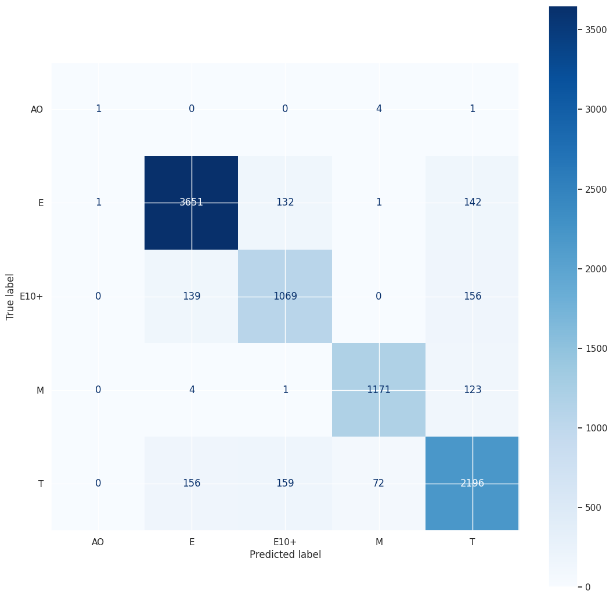
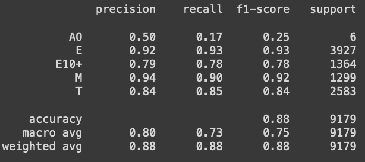
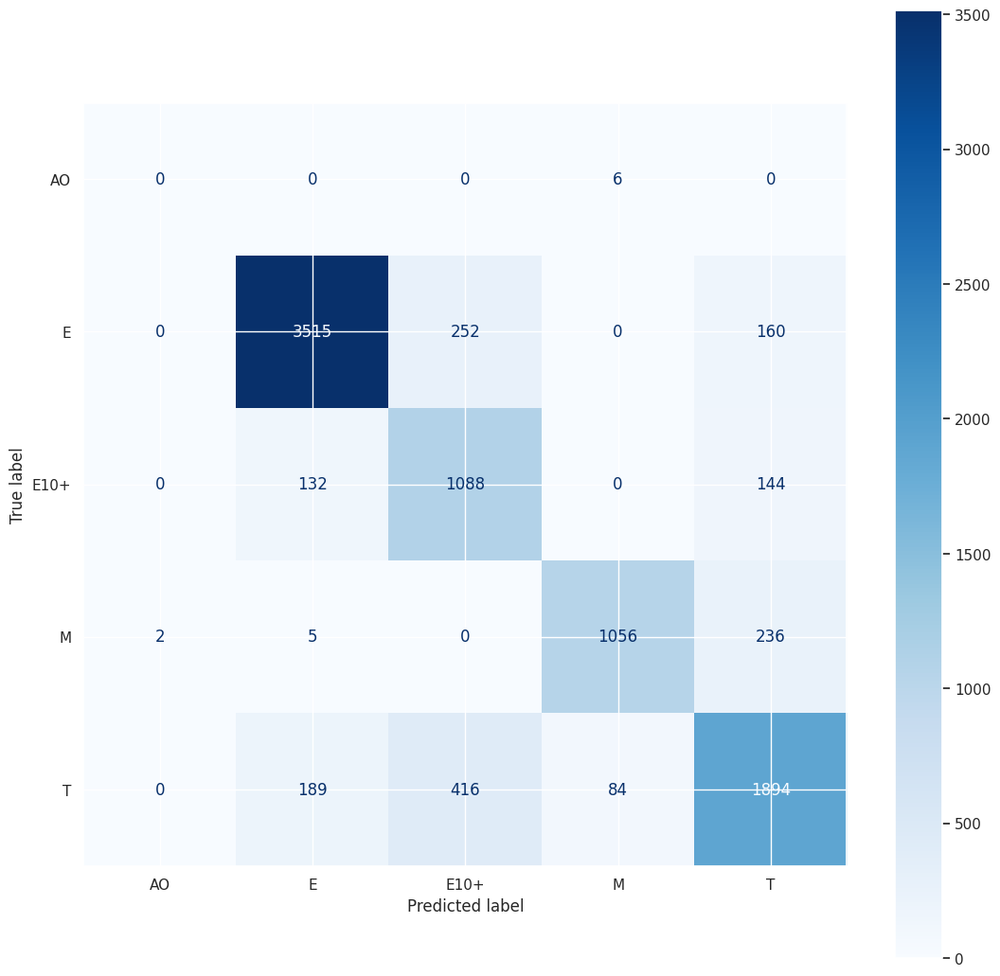
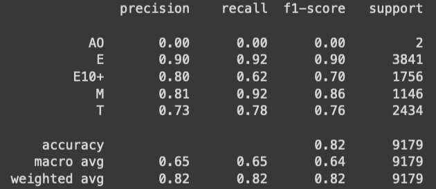
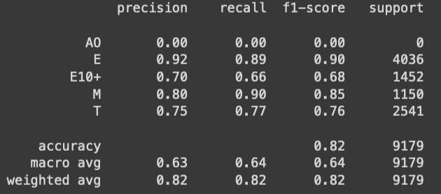
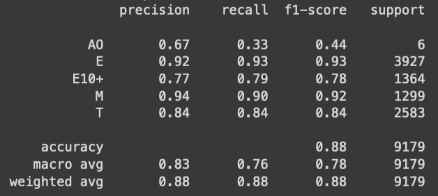
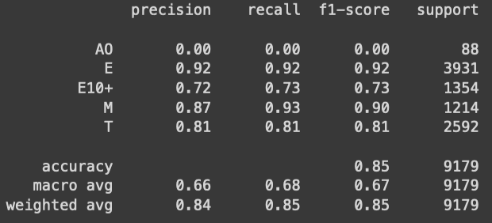
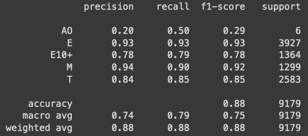
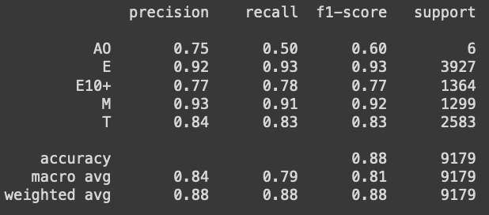

I decided to use PostGreSQL because I have past experience with it, it's free, and it's widely used and supported
- Connect to the website using Selenium.
I'm getting data from ESRB.com
- Identify what we want to scrape
There are entries on the website for tens of thousands of games. Each game has six values associated with it, what I labled: game_title, esrb_rating, content_descriptors, interactive_elements, content_summary, platform,
- Decide how to best harvest them.
We can directly add those values as a row in a Postgres table which I called RawData. I created a backup pandas DataFrame which periodically downloads as rawdata.csv
- .
- Identify which package[s] we will use to connect a python scrip to a PostGres database.
I like the Psychopg2 package for it's simplicity and similiarity to SQL relational database querying
- Identify how to safely automate authentication and connection to the database. connect.py
I used a credentials.ini file, as well as a couple of python helper functions, configuration.py and connect.py, to ensure that the process consistently runs smoothly
- Extracting the data.
Query the site and when a datapoint is found, add it as a row to a temporary SQL table called rawdata
- Loading the data.
When the results of the query are completely parsed, add an id column and load the rawdata table into the PostGreSQL warehouse
- Merge the data.
Join the rawdata table with previously collected data, eliminating any repeated datapoint which have been previously collected
- Repeat these three steps until all queries have been parsed or favor is lost with the web gods.
- Transform the data:
This step automatically begins when the previous step is reached
- Remove any virtually identical rows
- Split the comma-seperated-list "platform" column into a more numerous one-platform-per-row column.
- Append ancillary data from external tables such as "release_date", "genres", and "sales".
- One-hot encode the comma-seperated-list "content_descriptors" column into numerous single-descriptor columns
- Output a csv file with all transformed data for modeling.
Surprisingly challenging. I ultimately had to save it to the /tmp directory and then move it into a more convient spot.
There's now many rows missing data which couldn't be found in the ancillary tables
- Try to impute the 50% of the release_year which are Nan.
- Create a dictionary which contains three pieces of information about each platform:
- The year the platform was released
- The year the platform was discontinued
- The "generation" of the console
- For each game which is missing a release_year, look for the game on another platform of the same generation but where release_year is present. If found, set the missing release_year to that found release_year
- For each game which all platforms, from the same generation, of the game have no release_year, for each set of games of the same platform generation, set the release_year to be the mean of the intersection years of the latest console release date (it couldn't have come out before that) and the earliest console discontinue date (it couldn't have come out after that).
- Create a dictionary which contains three pieces of information about each platform:
- Try to impute some of the 85% of sales data which is missing
- Make little tweaks to allow various types of models to train on the data
- I decided to manually evaluate various different models in a ipynb notebook. This way I could get a more intuative sense of the variance and data format preferences of each of the various models and take advantage of the unique information that some models provided along with their predictions.
- I explored seven different models:
- RandomForestClassifier:
- BernoulliNB: This is MultinomialNB but for binary features. I wanted to see how probablistic algorithms would work on the data, especially with much more data. In terms of performance, it performed a fair amount worse then RFC. The overall accuracy was 82% and struggled to positively identify Rated E10+. Further, and this happened with a couple other models, some strange is happening with the AO test samples. In this case, BNB only registers two "AO" test samples, when in reality there are 6. This doesn't change when I try rerunning the model. Since AO is a very small subset of the data, as of now 27 rows, it has virtually no effect on the model. Further, the reality is that, for practical reasons, AO is a death sentence for the commercial prospects of a game, so it seems to me that the ESRB and developers always work together to get any content to fit into a rated M, so it's really an academic catagory. Something similiar occured with the next model as well.
- LogisticRegression: I tried this because I still wanted to see how probablistic algorithms would work on the data. Perhaps there's a certian threshold that can be found in the data. It performed about the same as NB, which isn't surprising. Here also, something strange happened with the AO test samples, it said there were no when in reality there were 6. This doesn't change when I try rerunning the model.
- XGBClassifier: Firstly, Gradient Boosting is an algorithm that everyones talks about. It combines several weak learners into strong learners, in which each new model is trained to minimize some form of Gradient descent, each iteration hopefully stronger in a particular area than previously. Everyone raves about XG[radient]B[oosting] and it's frequenty said that it generally outperforms RF. I think in general, it is a top performer with continuous features but I wanted to try it out anyway. Suffice to say, vanilla XGB performed a bit worse then vanilla RF. With some simple hyper-parameter tuning, I got it performing nearly identical to vanilla RF.
- HistGradientBoostingClassifier: XGB was a bit lack luster so I decided to try a more traditional gradient boosting algorithm. Traditionally, Gradient boosting was a slower training process, so I started with Histogram-Gradient_boosting, which speeds up the gradient descent by binning the data values. This is used for bigger datasets and maybe my dataset was pretty large. The performance was a fair amount worse than RF. It didn't take long to train however. Here also, something strange happened with the AO test samples. Unlike with the probability based models, Everytime I run this model, it shows up with a slightly different sample distribution. Further, one can tell something is not right because it says there are 88 AO samples, when the entire dataset has only 27. The other two GB models I tried did not exhibit this behavior, so I believe this algorithm is binning the samples by their features, taking the most inapporiate games and binning them into AO. I'm sure this could be corrected by adjusting the hyper parameters but I don't think this model is what we need so I'm not going to waste my time trying to do that.
- GradientBoostingClassifier: Since HistogramGB didn't take long, I decided to try regular GB. It took a good deal longer with about the same performance as HistogramGB. I decided I was going to try to optimize the hyper parameters. After about the 13 minutes of run time, I got it performing nearly identical to vanilla RF.
- DecisionTreeClassifier: If RF performed so well, maybe decision trees are well suited for this dataset. So I tried regulur Decision tree, which uses Gini Impurity to build a single good decision tree, compared to RF aggragating a "forest" of overfit trees. The accuracy was very close to RF, at 87.6675%. This was not the case when we modeled ESRB data a couple years ago. There might be a bit more variance but the difference in accuracy was never more than 0.5%
We ran with a RandomForestClassifier model last time we modeled ESRB, so the natural place to start would be to try the same model. what were the scores? There was a definite improvement in performance across all catagories. The overall accuracy increased to 88.0706%, a 2-3% increase and the variance was frustratingly improved. I had to specifically print 5 sig-figs to see any change between one implementation and another.

Here is an overview of the decision tree built by DecisionTreeClassifier. Context click and Open Image in New Tab to view the details. - I decided to roll with Random Forest it since quickly performs the best, with almost no variance. Could I improve it's performance by optimizing the hyperparameters?
- RandomizedSearchCV The first type of hyper-parameter optimization searching I did was a RandomizedSearchCV. The CV stands for Cross-validation and the idea is that it reduces the risk of overfitting compared to our single train-test split which we used when initially training the model. It's commonly called k-fold cross-validation becuase we split the dataset into k equally sized "folds". The model is trained k times, with each fold serving as the validation set once and the remaining folds as the training set. The big picture is that we can understand how our model performs under all the circustances in the data. What RandomizedSearch does is takes a "grid" of hyper-parameter values for various parameters and trains a model with a random parameter configuration from the grid k times, each time with the data redistributed. We're answering the question: How did the model perform, with a random configuration of parameters, on the dataset in general? If we answer that question, say 8000 times, we can "Search" the answers for the best configuration. Often, you take that configuration and you make a new grid with similiar values to that configuration, and run the process again. Through this, we home in on the best configuration overall. Random search is a great place to start when you don't know where to start. Intitially, I felt like if we were going to find better performance, it would probably be somewhere the RF algorithm didn't look. I ran 7 hours of Random search, slowy improving the accuracy from bad to decent, before I decided that I was probably wasting my time. I started from a grid of truly random parameters hoping to find somewhere which the model overlooked. I should have trusted the model and started from a grid of parameters like the ones the model used.
- GridSearchCV When we home in on a set of high performing hyper-parameter, we can choose to do a more thorough GridSearchCV. It's the same idea as a random search but every combination of parameters in the grid is tried. This makes it much more focused on a small area compared to random search. Based on my experience with the Random Search, the initial parameters of the RF model were:
- 'bootstrap': True,
- 'ccp_alpha': 0.0,
- 'class_weight': None,
- 'criterion': 'gini',
- 'max_depth': None,
- 'max_features': 'sqrt',
- 'max_leaf_nodes': None,
- 'max_samples': None,
- 'min_impurity_decrease': 0.0,
- 'min_samples_leaf': 1,
- 'min_samples_split': 2,
- 'min_weight_fraction_leaf': 0.0,
- 'n_estimators': 100,
- 'n_jobs': None,
- 'oob_score': False,
- 'random_state': None,
- 'verbose': 0,
- 'warm_start': False
These seemed very vanilla to me but I went with them. I created a 17 dimension array (AKA grid) of parameters which had 8000 combinations and I ran each with 3 folds. That means we are running the RF 24,000 times, which took around 6 hours. Suffice to say, it never quite reached the performance of the original model. It's hard to say with certainty why is never quite reached that score but I think it's because when we originally trained the model, it was using a 4:1 train-test ratio, and this was a 2:1 test ratio. Matching that would take maybe twice as long and I've had issues running programs for so long. I tried increasing the number of folds but either google or my computer timed out. Based on what performed well in the 3 fold run, it's very clear that any deviation from the original parameter combination either lowers performance or has no impact. I spent many hours trying to find a concise way to visualize this idea but with only moderate success.
Pruning alpha hyperparameter
Setting a minimum number of samples required for nodes hyperparameter
Setting a minimum leaf fraction hyperparameter
Setting the number of estimators or minimum amount of purification required to split a node hyperparameters
- None of these parameters seemed to increase performance. Furthur, in 24000 trainings, we never once acheived as high an accuracy as when we ran the defualt model. What parameters get us from where we are to where the defualt model is?
The first thing to note is that one, pretty much unparameterized decision tree almost exactly matched the RF performance. It's reasonable to think that a forest of decision trees would be similiarly unparameterized. Parameters are all just restrictions on the model. Letting the model go unrestricted on this data has been shown to be advantageous. It's hard to express exactly why unrestrained tree building works so well on this data but if you browse through the decision tree (Open Image In a New Tab), you get a bit of intuition. I didn't see leaves (conclusions) which I fel were overfit. The loss of accuracy emerged from very small scale contradiction in the data. For example, there are 17 games with these 7 features values, 15 of them are M, 2 of them are T. There's an 86.7% chance the game is M. Sometime, there's only one game which has a particular set of feature values. Why restrict that branch from being created? Any alternative guess would likely be less accurate.
- How can the training accuracy of the model be only 91% ? Has the model not mastered it's own data?!
This question is actually pretty common and WAY UNDER-ADDRESSED in my opinion. I found a few people asking about this online and I found even fewer people discussing it and or suggesting answers. From what I gathered, it's a very fundamental and important question with some very intuitive answers that I found eye-opening. Here's what I gathered:
The basic answer is that the model is not complex enough to perfectly memorize the patterns in the training set. Ok fine, how and why is that?
Increasing the model's complexity, such as using more or deeper trees, could potentially improve the training accuracy, but it could also lead to overfitting. We found that decreasing the complexity by any amount seriously hurts the model, so more complexity would be the natural way to go. But maybe the model must have found that, at the very least, furthur complexity doesn't increase testing accuracy, let alone decrease it. A related reason, which I don't think is at play with our model, is that some models commonly have default and or set hyperparameters which attempt to prevent this very overfitting by intentionally causing the model to memorizing the data a little less, in one way or another. The most common example of this are models which "regularize" the data before training on it such as variants of OLS regression like Ridge regeression. A 2nd reason for the lower training accuracy, which we touched on in the first question, is that there are numerous place in the data where, for example, you have 17 games with identical values for every feature, yet there's an 86.7% chance it's an M, and a 13.3% chance its a T. If you feed that set of features into the model, no amount of training or familiarity with the data can allow you to increase your chances of guessing correctly. - If the accuracy on training data is only 91%, how can we expect the testing score to increase anymore than 88% ?
As the data and the model stands now, I don't think we can expect to gain more testing accuracy. In a not so scientific comparison, if our training accuracy was 100%, then our testing accuracy would be ~97%, which is pretty good I think. I think the primary reason we aren't able to improve our accuracy is mostly because of fundamental limitations in ESRB discriptor data. When we model real phenomena, we often think the goal is to predict the behavior of that phenomena. The other side of that goal, which is just as important, is finding what we can't precisly predict. Subjectively assigned content descriptors and a release year will only get us so far. Our model has shown us pretty definitively how far that is. There is a strong element of subjectivity which ultimately decides ratings those on the fence games. I believe that we can improve our general ESRB rating prediction accuracy by trying to tap into a bit more of that subjectivity than we already have.
- Better release dates:
If you remember, I imputed half of the ~46,000 release years using information about the consoles the game was ported to. Of that half, approximately 15.8% were Windows-only games, which means they came out sometime between 1986 and 2024. There is nothing to learn from that range. A further 10% were other 'computer games' with giant unhelpful ranges. So we got over 25% of the imputations, ~12.9% of the overall dataset, were unhelpful. Yet, the MDI-based feature importance provided by the model always ranked release_year as the most important feature in the tree. Gathering more accurate release dates for, at least that 12.9%, if not the whole imputed 50%, could easily improve the testing accuracy of the model. Furthur, it will definitively increase the insightfulness of the dataset.
- Featurize the content summary and interactive elements
If you asked the ESRB person why they gave a game a T when they gave the other 17 games with the exact same feature values an M, they would probably say something like " ya, it had the same content descriptors but this game had less of it and the content was less inapporiate as well." Luckily, they provide a large amount of that explanation data and ~45% of our dataset includes it. The problem is that I'm not at the point where I could featurize it. But even a tiny investment in this arae can yeild improvement. A simple example, we have two games: The Dark Crystal: Age of Resistance Tactics AND Hyrule Warriors: Age of Calamity. Both have same single descriptor, Fantasy Violence, and both came out in 2020. Dark Crystal got an E10+ rating and Hyrule got a T. We say that the vast majority of the only Fantasy Violence games from 2020 got an E10+ and predict based on that. However, we can further say that Hyrule has a content summary and many of the E10+ games, do not, becuase the rater felt there's nothing to note. I try this soon.